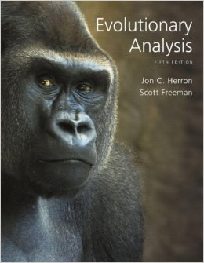

Texts
Evolutionary Analysis
by Herron and FreemanISBN: 0321616677

The Monkey's Voyage
by Alan de QierozISBN: 815341636
The Beak of the Finch
by Jonathan WeinerISBN: 0679400036

Schedule
| Date | Topic | Reading | Lecture notes |
|---|---|---|---|
| Monday, Jan. 11 | Welcome to evolution! What are the questions and what has science discovered? We will begin our discussion with an example of biogeography in the Gulf of Guinea and battling the annual influenza virus. Individual student projects will be assigned. |
Measey et al., 2007. This paper explains the work on amphibians on the islands of the Gulf of Guinea.
Wallis & Trewick, 2006. This paper describes the biogeographical significance of New Zealand. Dobzhansky, 1973. This is a classic article that argues for the role of evolution in biology. Nurse, 2006. This paper gives Nurse’s view of the five most important overarching ideas of biology. |
[course intro]
[what is evolution?] |
| Tuesday, Jan. 12 | We will duscuss a short history of the world including the geological and fossil records. We will also begin the timeline assignment. | [history of the earth] | |
| Wednesday, Jan. 13 | We will continue our examination of the fossil record and begin our adventure into phylogeny and tree-thinking. | [fossil record] [phylogeny] | |
| Thursday, Jan. 14 | An introduction to the facts and ingredients of evolution. | Farhadifar et al., 2015. This wonderful paper explores the variation in the mitotic spindle for nematodes. |
[heritability]
[natural variation] |
| Friday, Jan. 15 | We will continue our discussion of the facts of evolution and will begin population genetics. | [forces of evolution part I] | |
| Monday, Jan. 18 | Population genetics continued. | Orr, 2009. This is the best introduction I know of to the description of fitness, with careful statements about what we mean by this word mathematically. | [forces of evolution part II (finches)] |
| Tuesday, Jan. 19 | Case studies in evolution: Experimental evolution and the great transitions. | [experimental evolution] | |
| Wednesday, Jan. 20 | We will discuss the evolution of humans. | [human evolution] | |
| Thursday, Jan. 21 | Biogeography and Evolution: We will discuss the biodiversity of Hawaii, New Zealand, the Galapagos, and the process of speciation. The students will give their project presentations. | [final lecture] |